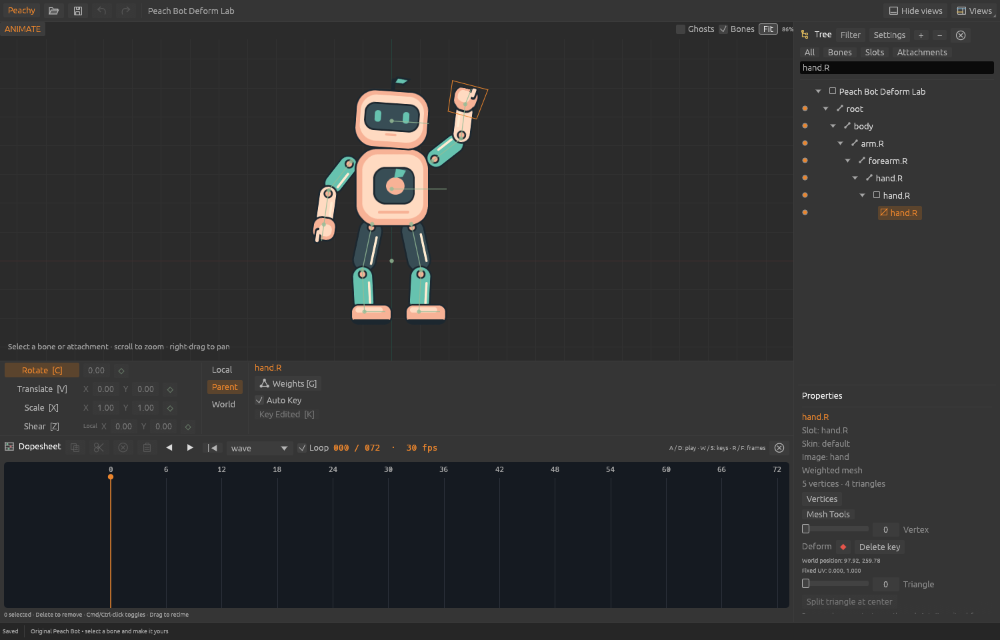
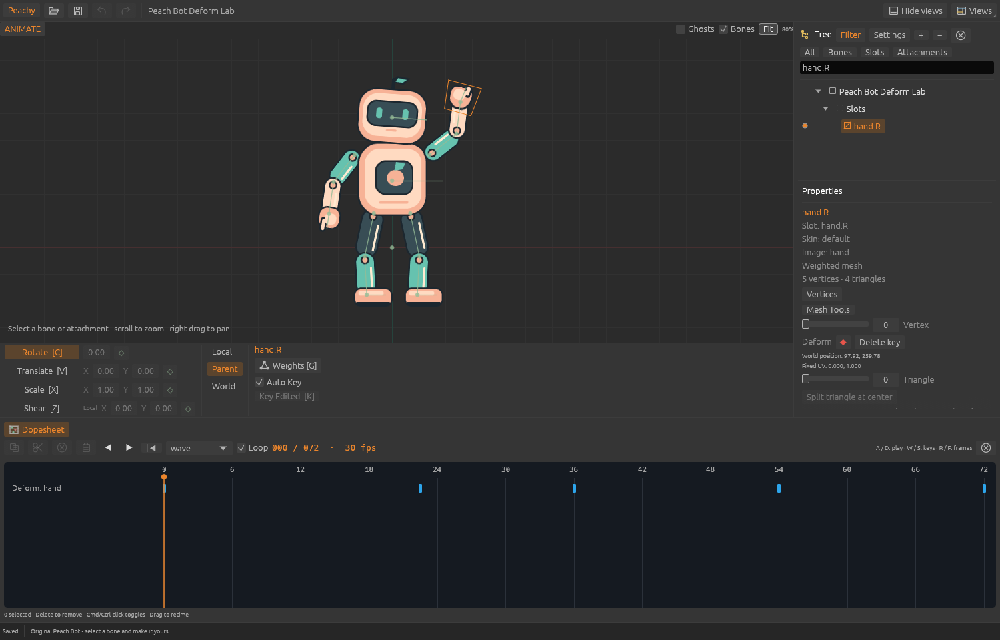
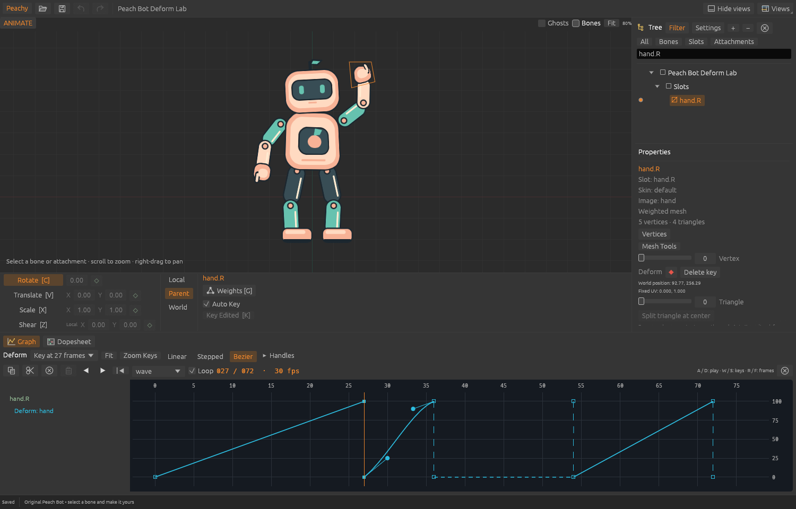

Dopesheet · Before and after
Inspection: rendered native captures at 1500×960. Before has no Deform timeline row; after shows attachment-owned keys and a full-width bottom dock.




November 14, 2026 · Actual native captures with original Peach Bot artwork. Select an image for the full-size PNG.
The installed Spine 4.3.26 comparison establishes blue Deform rows, bottom Graph/Dopesheet tabs beneath the Tree, and frame-based 0–100 pose transitions. Reference screenshots remain private. These captures show Peachy's independently implemented controls.
Inspection: rendered native captures at 1500×960. Before has no Deform timeline row; after shows attachment-owned keys and a full-width bottom dock.


Inspection: actual mouse/keyboard input and resulting document equality. The Graph edits interpolation between dense mesh poses, preserving every stored vertex offset.

| Level | Verified behavior | Limit |
|---|---|---|
| Shared core and shell | Focused engine timeline, desktop Deform/Graph/views/layout and strict MCP schema/protocol checks; formatting, Clippy, build and architecture pass. | Focused local checks, not a full-suite or hosted-CI pass. |
| Native input | Key retime, tangent drag, percentage typing, one-step history, keyboard clipboard/delete, Escape cancellation, playback and fresh-process persistence. | Selected-owner workflow; full all-bone row hierarchy and mixed-owner curves remain open. |
| Actual stdio MCP | Read-only typed copying, retime, cross-attachment/clip paste, exact curve editing, atomic history, Save/reopen and export. | Independent headless session; no live desktop bridge. |
| External Spine runtime | Both MCP- and native-authored outputs match across both clips and all three skins; max mesh error 0.00003052 at 0.001 tolerance. | Finite sampled data compatibility; no pixel-equivalence or full Spine compatibility claim. |
| Installed editor | Native clipboard probes establish compatible and rejected offset layouts; same-layout positive control succeeds. | Arbitrary docking, multi-vertex tools, advanced Offset, complete styling and broader features remain. |
Scalar evidence · Contract and exact scope · Official-update backlog